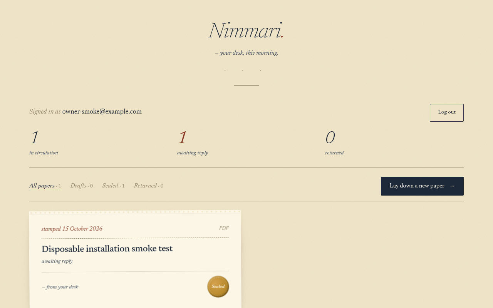
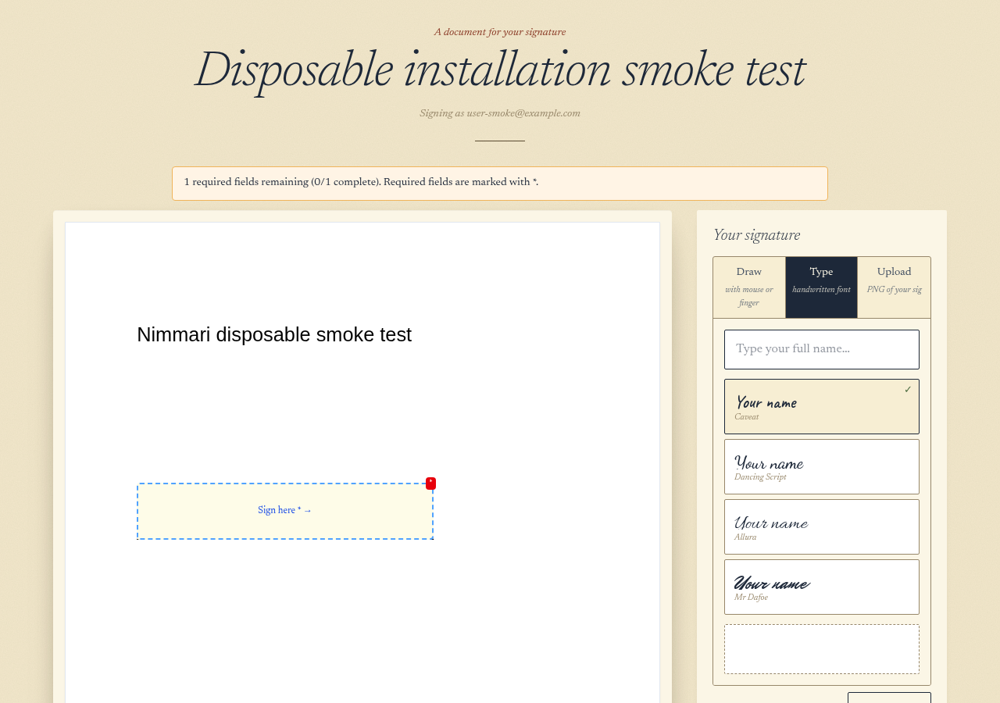
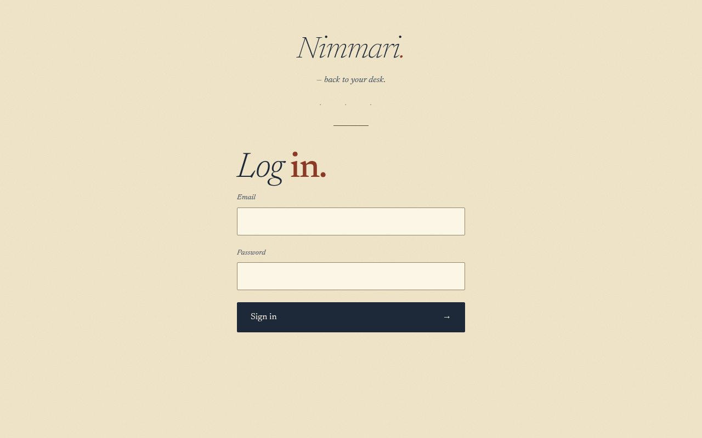
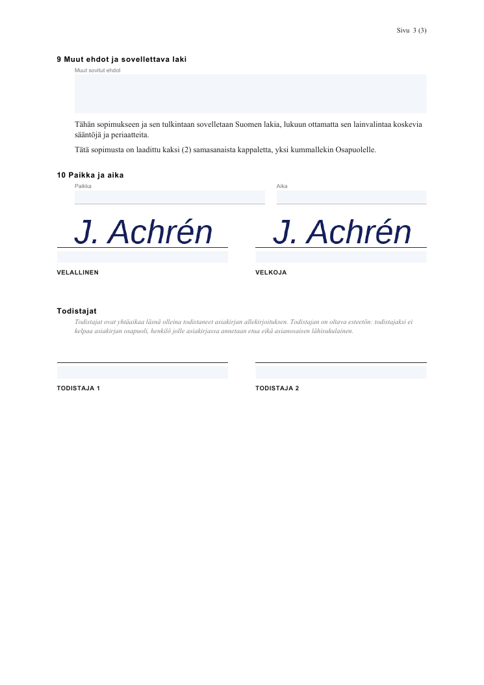

PDFs & HTML forms
Place text, multiline text, checkbox, date, personal identity text, and signature fields. Import existing PDF AcroForm fields or use HTML form mode.
Open source · Self-host only · AGPL-3.0
Nimmari is an e-signature service with an API built for AI agents. Upload a PDF or HTML form, prepare its fields, and send a signing link.
There is no hosted SaaS. You run your own instance on infrastructure you control.
Nimmari is Finnish for “autograph”. Formerly Puumerkki.

From document to signing link
Place text, multiline text, checkbox, date, personal identity text, and signature fields. Import existing PDF AcroForm fields or use HTML form mode.
Use parallel or sequential signer slots, including distinct roles with the same email. Signers need no account; signing links expire after 30 days.
Prefill draft fields, set required fields, and use private signing views. Documents support cancellation and signer decline.
Combined audit seals record signing metadata, with timezone controls and a SHA-256 content hash.
Use scoped, hashed API keys and admin account provisioning. Optional Resend email and outbound lifecycle webhooks connect your instance to other services.
Run the Docker image on Render or your own host. Documents and signed outputs live in your configured database; back it up and test restores.



Run your own Nimmari
The default fresh hosted setup uses a Render API key and a Turso Platform API token. Your agent deploys the instance, then completes the one-time setup claim.
The claim creates your first account and separate admin and regular agent keys. No server root key is needed. Provide credentials privately through your agent’s secret manager or environment, and keep them outside the repository.
Install my own Nimmari instance using the default Render + Turso API-key flow:
https://github.com/achren-oss/nimmari/blob/main/INSTALL-FOR-AGENTS.md
Ask me for a Render API key, a Turso Platform API token, and my login details.
Deploy the instance and complete the one-time setup claim.
Keep credentials private and outside the repository.Follow the installation runbook →
Use the Deploy to Render button instead. Create a Turso database, enter its credentials and a one-time setup code in Render, then give your agent the service URL and first-account details to complete the claim.
Deploy to RenderSee the Render deployment guide. For Docker or other self-managed installations, see self-hosting options.